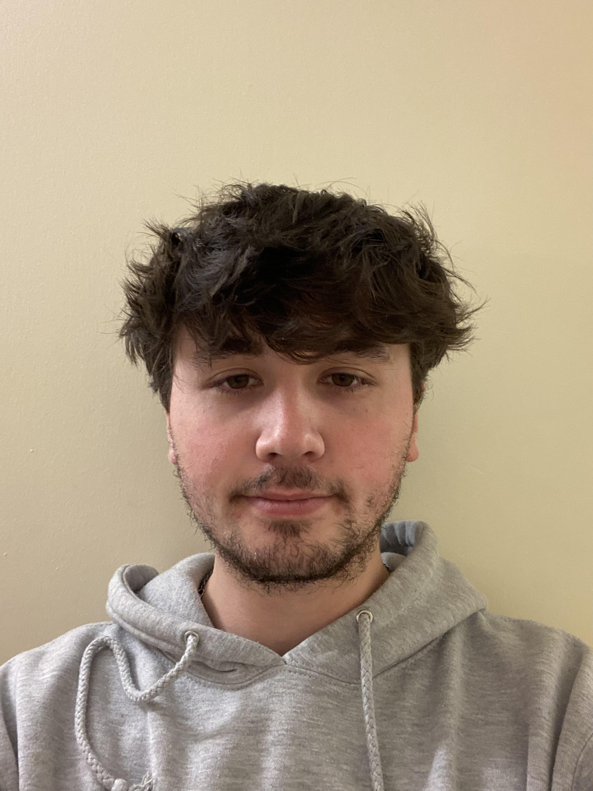

Final Year Project — BSc (Hons) Computer Science — SETU — 2025/26
A Unity Horror Game with Real-Time Eye Tracking
About the Project
Eyes Wide Open is a first-person horror game where your actual eyes replace every traditional control. The entities haunting these endless backrooms corridors obey one rule: they only move when you're not watching.
Using real-time webcam facial tracking through MediaPipe, the game detects every blink and reads your gaze direction, turning your own biological limitations into the core survival mechanic.
Developed as a Fourth Year Final Year Project at South East Technological University (SETU), Department of Computing & Mathematics.

Sam Lyster
Student No: 20102256
Key Features
01 — Blink Detection
The Eye Aspect Ratio (EAR) algorithm runs across 468 facial landmarks in real time to catch every blink. The moment your eyes close, enemies are free to move. Blinking also works alongside head tracking to interact with objects in the world, so both mechanics feed into each other throughout the game.
02 — Head Tracking
The player's head position is tracked in real time using the nose tip landmark from MediaPipe, which drives a cursor on screen. Doors, keypads and collectibles all respond to where you're facing and for how long. A 5-point calibration system runs at the start of each session to account for different setups and webcam positions.
03 — Enemy AI
Entities freeze the moment you look at them directly. They only activate once they've been observed, so nothing chases you from off-screen before you've even seen it. All movement is timed with the blink vignette blackout so enemies are never visibly teleporting and the illusion stays intact.
04 — Procedural Levels
Tile prefabs slot together using edge-matching rules on every run, so no two layouts are the same. A connectivity check runs after generation to catch any isolated sections or dead ends, making sure every level is fully navigable. The backrooms layout changes each time, so the environment never becomes predictable.
Technologies Used
Project Resources